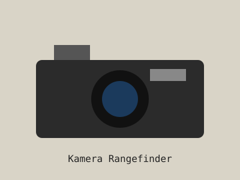

Mount adalah sambungan antara lensa dan kamera. Lensa dengan mount berbeda butuh adapter berbeda agar bisa terpasang di kamera mirrorless.

Kamera dengan lensa manual terpasang.
Adapter bekerja sebagai perantara yang menjaga jarak lensa ke sensor tetap pas, sehingga fokus tak hingga tetap akurat.
Contoh Pasangan Lensa dan Adapter
Lensa M42 memakai adapter M42 ke mount kamera (misalnya Fujifilm X atau Sony E).
Lensa M39 memakai adapter M39 ke mount kamera.
Lensa Canon FD dan Minolta MD masing-masing memakai adapter FD atau MD.
Crop Factor pada Kamera APS-C
Pada kamera dengan sensor APS-C seperti Fujifilm X, sudut pandang lensa tampak lebih sempit karena crop factor sekitar 1,5x. Lensa 50mm akan terlihat seperti lensa sekitar 75mm.
Contoh Perhitungan
50mm x 1,5 = 75mm (setara full frame)
58mm x 1,5 = 87mm (setara full frame)
Tips Fokus Manual
Aktifkan focus peaking di kamera.
Gunakan bukaan f/4 ke atas untuk pemula agar lebih mudah.
Perbesar tampilan (magnify) saat mengunci fokus.
Untuk street photography, coba teknik zone focusing: atur jarak dan bukaan dahulu, lalu tunggu subjek masuk zona fokus.
Kesalahan Umum Pemula
Pemula sering memakai bukaan terlalu lebar sehingga area tajam sangat tipis dan foto terlihat luput fokus. Mulailah dengan bukaan menengah, lalu perlahan coba bukaan lebar.
Merawat Lensa Vintage
Simpan di tempat kering, idealnya dengan silica gel.
Bersihkan debu dengan blower sebelum mengusap kaca.
Gunakan cairan pembersih lensa dan kain mikrofiber.
Pasang tutup depan dan belakang saat tidak dipakai.
Katalog Lensa Populer
Daftar lensa manual vintage populer
No
Nama Lensa
Focal Length
Bukaan Maks
Mount
Karakter
1
Helios 44-2
58mm
f/2
M42
Bokeh berputar khas
2
Jupiter-8
50mm
f/2
M39
Rendering klasik, lembut
3
Super-Takumar
50mm
f/1.4
M42
Hangat dan kokoh
4
Canon FD
50mm
f/1.8
FD
Ringan dan mudah dicari
5
Minolta MD Rokkor-X
50mm
f/1.7
MD
Warna lembut
Rekomendasi Berdasarkan Kebutuhan
Ingin bokeh unik: Helios 44-2 adalah pilihan klasik karena efek bokeh berputarnya.
Ingin lensa ringan untuk jalan kaki: Canon FD 50mm f/1.8 ringan dan mudah ditemukan.
Ingin bukaan lebar: Super-Takumar f/1.4 cocok untuk cahaya minim.